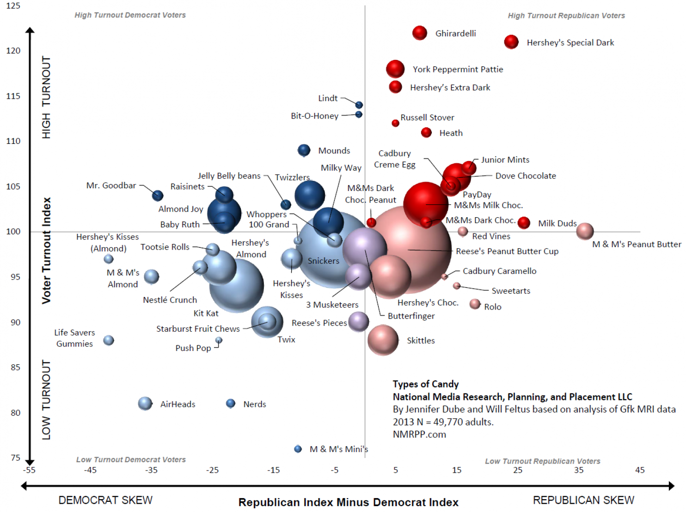

Welcome to POLS 1600
Overview
Goals and Expectations
Course Structure
Course Policies
A Few Fundamental Truths
Goals and Expectations
What you will learn
You will learn
how to think like a social scientist
how to use data to make descriptive, predictive, and causal claims
how to quantify uncertainty about these claims
how to present, interpret, and critique these claims
Reasons to take this class
- You want to change the world
. . .


Why is this study important?
- Findings provide evidence of benefits of social spending/universal basic income
Why should we believe these results
Because it’s in the Times?
Because the authors are professors at good schools?
Because of how the study was done!
- Random assignment provides a reasoned basis for inference
- Creates informative counter-factual comparisons
- Pre-registered hypotheses ensure that we’re not cherry-picking results
Why might we be skeptical of these results?
- How strong are the effects?
- Is a fifth of a standard deviation a lot?
- Why do we care about brain waves?
- What’s the mechanism?
- How confident are we that these results couldn’t have happened just by chance
Why might we be skeptical of these results?
Why might we be skeptical of these results?

Source: Andrew Gelman
Why might we be skeptical of these results?

Source: Andrew Gelman
Why might we be skeptical of these results?
Why might we be skeptical of these results?
Reasons to take this class
You want to change the world
- Data, design, and analysis are incredlibly powerful tools
- You want to understand their strengths and limits
You want to be a better consumer of data and knowledge
You want to be a better consumer of data and knowledge
You want to get a job / go to grad school
You have to
You’re just in it for the memes
Great expectations
I expect that you will come to class ready to engage with:
social science
data
programming
math
Requirements
I assume that you will
- Do the readings
- Bring your computers 1
- Work through classwork
- Ask questions
Course structure
Class
Tuesday: Lecture/Demonstration
Thursday: Lab/Exploration
Class websites
Slides, labs and additional resources available here: pols1600.paultesta.org
Assignments uploaded here: Canvas
Software and computing
- Statistics done using R
- Open source (free) statistical language
- Through R Studio
- An integrated development environment for R
- Results written up using R Markdown
- Language for combing R code with html Markdown

R

R Studio

Quarto
- Project options in YAML
- Code in triple backtick chunks:
- Chunk options set with “#|” (hashpipe)
```{r}
#| label = "simulate_data"
x <- rnorm(100)
y <- 2*x + rnorm(100)
```Write up in Markdown
Output rendered as an html file

Getting set up for the course:
Here’s a link to a guide to get you setup for the course.
Take a crack at it after class, over the weekend.
Email me with any issues (there are always issues), and drop by my office hours on Tuesday so we can trouble shoot.
Textbook

https://press.princeton.edu/books/paperback/9780691222288/quantitative-social-science
How to Read Imai
Active reading
Copy and run the code in the text. To do so, do the following:
if (!require("devtools")){
install.packages("devtools")
}
library("devtools")
install_github("kosukeimai/qss-package",
build_vignettes = TRUE)How to Read Imai
Once you’ve rune the following
install.packages("devtools")
install.packages("remotes")
remotes::install_github("kosukeimai/qss-package", build_vignettes = TRUE)Anywhere the text loads data:
afghan <- read_csv("afgahn.csv")You can do
library("qss")
data("afghan")
summary(afghan$age) Min. 1st Qu. Median Mean 3rd Qu. Max.
15.00 22.00 30.00 32.39 40.00 80.00 Additional Readings
- Occasionally, I will provide additional readings, available on both Canvas and pols1600.paultesta.org
Assignments
Assignments
You have three types of assignments in this course
- Labs
- Tutorials
- Final Project
Labs
- Each Thursday we will work in groups to complete an in-class lab
- The labs are designed to reinforce and extend concepts from lecture using real world data.
Labs
Labs

Labs
- Weeks 1 and 2 we’ll work collectively
- Weeks 3 on, you’ll be assigned to small groups
- Each week:
- Log on to the Canvas, download the lab .qmd file
- Open R Studio
- Render the qmd file to get ready to work
- Complete the lab
- Upload the rendered html file to Canvas by the end of class
- One question randomly graded
- 100% if correct
- 85% if incorrect, but you tried
- 0% if you did not try/absent for the lab
- Comments/Answers posted immediately after class
Problem Sets/Tutorials
- Coding tutorials to reinforce concepts from lecture and textbook.
- Accessed by running
learnr::run_tutorial("00-intro", package = "qsslearnr")- Complete the tutorial. Save output as “LASTNAME_TutorialNumber.pdf”
- Upload output to Canvas by Friday by 11:59 pm
- Grades:
- 100% any upload
- 0% no upload
Final Project
Your First Assignment:
- Download and install R and R Studio
- Email me if you have troubles
- Troubleshoot by Zoom or in-person (111 Thayer Room 339)
- Work through 00-software_setup before next class.
Portals of Discovery
Errors
- ish happens
- Seeing red is a good thing
- We learn by making errors
Final Reports
- Can be on any topic you like
- More info to come
- Due dates:
- Week 2 Groups assigned
- Week 3 Research Topics
- Week 6 Data Proposal
- Week 8 Data Explorations
- Week 11 Drafts
- Week 12 Presentations
- Week 13 Final Paper
Grading and Other Policies
Grading

Grading

Grading

Grading

Grading
- 5% Attendance
- 10% Class involvement and participation
- 10% Tutorials
- 30% Labs
- 20% Assignments for final paper
- 20% Final paper
Course policies
- Academic honesty
- ChatGPT and generative AI
- Community standards
- Incomplete/late work
Introductions
Two Fundamental Truths
Testa’s first fundamental truth
. . .

Testa’s first fundamental truth
Why would I profess my utter ignorance on the first day of class?
Four possible reasons…
1. Expectation Management

2. Pedagogical Tomfoolery
/cdn.vox-cdn.com/uploads/chorus_image/image/55701647/Screen_Shot_2017_07_13_at_1.09.20_PM.0.png)
3. Positionality
4. Epistemology

Testa’s second fundamental truth
Testa’s second fundamental truth
Two kinds of people in this world

What is it that we say we do here

What does quantitative research do?
- Descriptions
Descriptions

What does quantitative research do?
- Descriptions
- Explanations
Explanations

Explanations
What does quantitative research do?
- Descriptions
- Explanations
- Predictions and Uncertainty
Predictions and Uncertainty

Predictions and Uncertainty
Predictions and Uncertainty
What does quantitative research do?
- Descriptions
- Explanations
- Predictions and Uncertainty

Two kinds of people in this world

Introductions
My research
- I study American Poltical Behavior with focus on poltics of race and criminal justice
- How do we break cycles of inequality when those most affected by injustice are the least likely to participate and those unaffected are the least likely to care?
- How can we use methodological tools to better answer these questions?
But enough about me

Class survey
Please click here to take a brief survey that will help me structure the class going forward.
Next Week:
- Complete the class survey
- Download and Install R and R studio
- Read Chapters 1 (Friday) and start Chapter 3 in QSS
- Tuesday: Lecture: Describing Data in R
- Thursday: Lab: Exploring COVID-19 data in the US
- Friday: Submit Tutorials: “00-intro” & “01-measurement”
- Only time you’ll have two tutorials due (Ok to submit late)
Footnotes
If you only have a desktop/or tablet let me know and we’ll figure out a solution.↩︎